In this document we discuss the finite-element-based solution of the the Helmholtz equation in cylindrical polar coordinates, using a Fourier-decomposition of the solution in the azimuthal direction and with perfectly matched layers.
Compared to the Fourier-decomposed Helmholtz equation discussed in another tutorial, the formulation used here allows the imposition of the Sommerfeld radiation condition by means of so-called "perfectly matched layers" (PMLs) as an alternative to classical absorbing/approximate boundary conditions or DtN maps.
We start by reviewing the relevant theory and then present the solution of a simple model problem - the outward propagation of waves from the surface of a unit sphere.
Acknowledgements This tutorial and the associated driver codes were developed jointly with Matthew Walker (The University of Manchester), with financial support from Thales Underwater Ltd. |
Theory: The azimuthally Fourier-decomposed Helmholtz equation
The Helmholtz equation governs time-harmonic solutions of problems governed by the linear wave equation
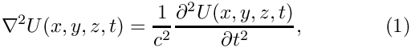
where  is the wavespeed. Assuming that 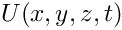 is time-harmonic, with frequency
is the wavespeed. Assuming that 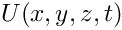 is time-harmonic, with frequency  , we write the real function as
, we write the real function as
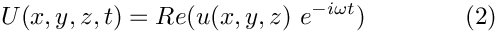
where 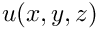 is complex-valued. This transforms (1) into the Helmholtz equation
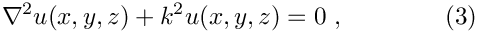
where 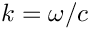 is the wavenumber. Like other elliptic PDEs the Helmholtz equation admits Dirichlet, Neumann (flux) and Robin boundary conditions.
If the equation is solved in an unbounded spatial domain (e.g. in scattering problems) the solution must also satisfy the so-called Sommerfeld radiation condition, which in 3D has the form
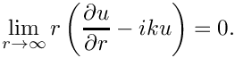
Mathematically, this condition is required to ensure the uniqueness of the solution (and hence the well-posedness of the problem). In a physical context, such as a scattering problem, the condition ensures that scattering of an incoming wave only produces outgoing not incoming waves from infinity.
These equations can be solved using oomph-lib's cartesian Helmholtz elements, described in
another tutorial. Here we consider an alternative approach in which we solve the equations in cylindrical polar coordinates 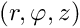, related to the cartesian coordinates 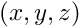 via
![\[ x = r \cos(\varphi), \]](form_11.png)
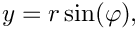
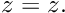
We then decompose the solution into its Fourier components by writing
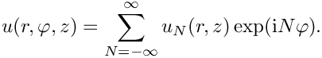
Since the governing equations are linear we can compute each Fourier component 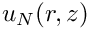 individually by solving
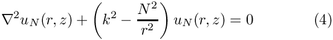
while specifying the Fourier wavenumber  as a parameter.
as a parameter.
Discretisation by finite elements
The discretisation of the Fourier-decomposed Helmholtz equation itself only requires a trivial modification of its cartesian counterpart. Since most practical applications of the Helmholtz equation involve complex-valued solutions, we provide separate storage for the real and imaginary parts of the solution – each Node therefore stores two unknowns values. By default,the real and imaginary parts are stored as values 0 and 1, respectively;
The application of Dirichlet and Neumann boundary conditions is straightforward and follows the pattern employed for the solution of the Poisson equation:
- Dirichlet conditions are imposed by pinning the relevant nodal values and setting them to the appropriate prescribed values.
- Neumann (flux) boundary conditions are imposed via
FaceElements(here thePMLFourierDecomposedHelmholtzFluxElements). As usual we attach these to the faces of the "bulk" elements that are subject to the Neumann boundary conditions.
The imposition of the Sommerfeld radiation condition for problems in infinite domains is slightly more complicated. In the next section we will discuss a method of representing the Sommerfeld radiation condition numerically by means of perfectly matched layers.
Perfectly matched layers
The idea behind perfectly matched layers is illustrated in the figure below. The actual physical/mathematical problem has to be solved in the infinite domain  (shown on the left), with the Sommerfeld radiation condition ensuring the suitable decay of the solution at large distances from the region of interest (the vicinity of the scatterer, say).
(shown on the left), with the Sommerfeld radiation condition ensuring the suitable decay of the solution at large distances from the region of interest (the vicinity of the scatterer, say).
If computations are performed in a finite computational domain, 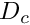 , (shown in the middle), spurious wave reflections are likely to be generated at the artificial boundary 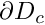 of the computational domain.
The idea behind PML methods is to surround the actual computational domain with a layer of "absorbing" material whose properties are chosen such that the outgoing waves are absorbed within it, without creating any artificial reflected waves at the interface between the PML layer and the computational domain.
Our implementation of the perfectly matched layers follows the development in A. Bermudez, L. Hervella-Nieto, A. Prieto, and R. Rodriguez "An optimal perfectly matched layer with unbounded absorbing function for time-harmonic acoustic scattering problems" Journal of Computational Physics 223 469-488 (2007) and we assume the boundaries of the computational domain to be aligned with the coordinate axes, as shown in the sketch below.
The method requires a slight further generalisation of the equations, achieved by introducing the complex coordinate mapping
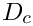
within the perfectly matched layers. The choice of 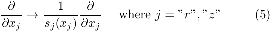 and  depends on the orientation of the PML layer. Since we are restricting ourselves to axis-aligned mesh boundaries we distinguish three different cases
depends on the orientation of the PML layer. Since we are restricting ourselves to axis-aligned mesh boundaries we distinguish three different cases
- For layers that are aligned with the r axis (such as the top and bottom PML layers) we set
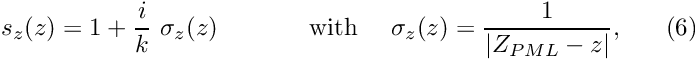
where 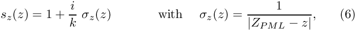 is the z-coordinate of the outer boundary of the PML layer, and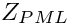
- For the right layer that is aligned with the z axis we set
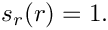
and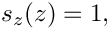
where 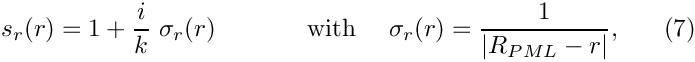 is the r-coordinate of the outer boundary of the PML layer. - In corner regions that are bounded by two axis-aligned PML layers (with outer coordinates and
) we set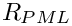
and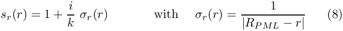
- Finally, in the actual computational domain (outside the PML layers) we set
Implementation within oomph-lib
The finite-element-discretised equations (modified by the PML terms discussed above) are implemented in the PMLFourierDecomposedHelmholtzEquations class. As usual, we provide fully functional elements by combining these with geometric finite elements (from the Q and T families – corresponding (in 2D) to triangles and quad elements). By default, the PML modifications are disabled, i.e. 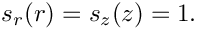 and 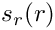 are both set to 1.
The generation of suitable 2D PML meshes along the axis-aligned boundaries of a given bulk mesh is facilitated by helper functions which automatically erect layers of (quadrilateral) PML elements. The layers are built from QPMLFourierDecomposedHelmholtzElement<NNODE_1D> elements and the parameter NNODE_1D is automatically chosen to match that of the elements in the bulk mesh. The bulk mesh can contain quads or triangles (as shown in the specific example presented below).
A specific example: Outward propagation of waves from the surface of an oscillating sphere
We will now demonstrate the methodology for a specific example: the propagation of waves from the surface of a unit sphere.
The specific domain used in this case can be seen in the figure below. We create an unstructured mesh of six-noded TPMLFourierDecomposedHelmholtzElements to create the finite computational domain surrounding a sphere. This is surrounded by three axis-aligned PML layers and two corner meshes (each made of nine-noded QPMLFourierDecomposedHelmholtzElements).

We construct an exact solution to the problem by applying Neumann/flux boundary condition on the inner spherical boundary such that the imposed flux 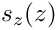 is consistent with the exact solution 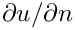 in spherical polar coordinates 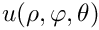, given by
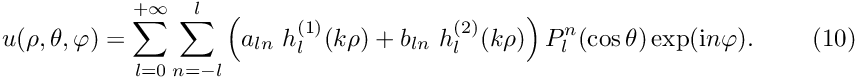
where the 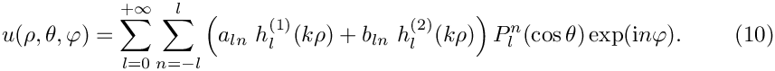 are arbitrary coefficients and the functions
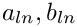
are the spherical Hankel functions of first and second kind, respectively, expressed in terms the spherical Bessel functions
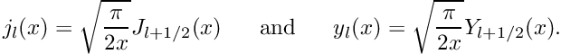
The functions
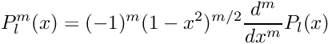
are the associated Legendre functions, expressed in terms of the Legendre polynomials
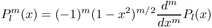
This definition shows that 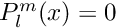 for 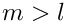 which explains the limited range of summation indices in the second sum in (10).
The relation between the cylindrical polar coordinates 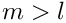 and spherical polar coordinates is given by
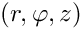
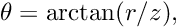
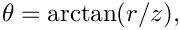
so 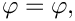 remains unchanged, and
![$\theta \in [0,\pi] $](form_51.png) sweeps from the north pole ( 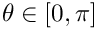), via the equator ( 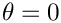 ) to the south pole ( 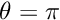).
sweeps from the north pole ( 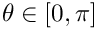), via the equator ( 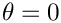 ) to the south pole ( 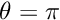).
Results
The two figures below show a comparison between the computed and exact solutions for a Fourier wavenumber of 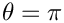, wavenumber squared  .
.


The numerical solution
The global namespace
As usual, we define the problem parameters in a global namespace. The main parameters are the wavenumber squared  , the PML thickness, the number of elements within the PML layer, and the Fourier wavenumber .
, the PML thickness, the number of elements within the PML layer, and the Fourier wavenumber .
Next we define the coefficients
required for the specification of the exact solution
and its derivative
whose listings we omit here.
The driver code
The driver code is very straightforward. We create the problem object,
and define the output directory.
Finally, we solve the problem and document the results.
The problem class
The problem class is very similar to that employed for the solution of the 2D Helmholtz equation with flux boundary conditions. We provide helper functions to create the PML meshes and to apply the boundary conditions (mainly because these tasks have to be performed repeatedly in the spatially adaptive version of this code which is not discussed explicitly here; but see the exercise on Spatial adaptivity).
The private member data includes pointers to the bulk mesh,
a pointer to the mesh of FaceElements that apply the flux boundary condition on the surface of the sphere,
and the various PML sub-meshes:
The problem constructor
We open a trace file in which we record the radiated power and create the Circle object that defines the curvilinear inner boundary of the domain.
Next we specify the the outer radius of computational domain
and define its polygonal outer boundary:
Next we define the curvilinear inner boundary in terms of a TriangleMeshCurviLine which defines the surface of the sphere,
and combine the various pieces of the boundary to the closed outer boundary:
Finally, we specify the mesh parameters,
build the bulk mesh, and add it to the problem:
Next, we create the FaceElements that apply the flux boundary condition on the boundary of the sphere and add the corresponding mesh to the problem too:
We create another set of FaceElements that allow the computation of the radiated flux over the outer boundaries of the domain:
(This mesh does not need to be added to the problem since its elements merely act as post-processing tools and do not provide any contributions to the problem's residual vector.
We build the PML meshes and combine the various sub-meshes to the problem's global mesh:
We complete the problem setup by passing the problem parameters to the elements, using the helper function complete_problem_setup() (Remember that even the elements in the PML layers need to be told about these parameters since they adjust the and functions in terms of these parameters).
Finally we assign the equation numbers,
The problem can now be solved.
Impose flux on inner boundary
The function create_flux_elements() creates the FaceElements required to apply the flux/Neumann boundary conditions on the boundary of the sphere.
Create power monitor mesh
The function create_power_monitor_mesh creates the FaceElements that allow the computation of the radiated power over the outer boundary of the computational domain.
Complete problem setup
The helper function complete_problem_setup() completes the setup of the elements by passing pointers to the relevant problem parameters to them. We apply zero Dirichlet boundary conditions on the centreline if the Fourier wavenumber is odd.
Apply zero Dirichlet boundary conditions
This final helper function pins both nodal values (representing the real and imaginary part of the solution) on the centreline and sets their values to zero.
Post-processing
The post-processing function doc_solution(...) outputs the solution within the bulk, the solution within the PMLs, the exact solution and the radiated power
Comments and Exercises
The enumeration of the unknowns
As discussed in the introduction, most practically relevant solutions of the Helmholtz equation are complex valued. Since oomph-lib's solvers only deal with real (double precision) unknowns, the equations are separated into their real and imaginary parts. In the implementation of the Helmholtz elements, we store the real and imaginary parts of the solution as two separate values at each node. By default, the real and imaginary parts are accessible via Node::value(0) and Node::value(1). However, to facilitate the use of the elements in multi-physics problems we avoid accessing the unknowns directly in this manner but provide the virtual function
which returns a complex number made of the two unsigneds that indicate which nodal value represents the real and imaginary parts of the solution. This function may be overloaded in combined multi-physics elements in which a Helmholtz element is combined (by multiple inheritance) with another element, using the strategy described in the Boussinesq convection tutorial.
PML damping functions
The choice for the absorbing functions in our implementation of the PMLs is not unique. There are alternatives varying in both order and continuity properties. The current form is the result of several feasibility studies and comparisons found in both Bermudez et al. These damping functions produce an acceptable result in most practical situations without further modifications. For very specific applications, alternatives may need to be used and can easily be implemented by constructing a PML Mapping class and passing a pointer to the elements.
Exercises
Changing the Fourier wavenumber
The generalised Fourier-decomposed Helmholtz equation allows for various Fourier wavenumbers . Confirm that a zero Dirichlet boundary condition is applied to odd Fourier wavenumbers.
Comparison of results
Compare the results computed by the current driver code against those obtained when the Sommerfeld radiation condition is imposed by a DtN mapping, as discussed in another tutorial.
Changing perfectly matched layer parameters
Confirm that only a very small number of PML elements (across the thickness of the PML layer) is required to effectively damp the outgoing waves. Explore the effects of altering the number of elements layer while keeping the PML thickness constant.
A second parameter that can be adjusted is the geometrical thickness of the perfectly matched layers. Explore the effects of altering the thickness while maintaining the number of elements within the PML layer.
Large wavenumbers
For Helmholtz problems in general, ill-conditioning appears as the wavenumber becomes very large. By altering , explore the limitations of both the mesh and the solver in terms of this parameter. Try adjusting the target element size in order to alleviate resolution-related effects. Assess the effectiveness of the perfectly matched layers in high wavenumber problems.
Spatial adaptivity
The driver code discussed above already contains the straightforward modifications required to enable spatial adaptivity. Explore this (by recompiling the code with -DADAPTIVE). You will note that the driver code for this case is modified slightly – the system is no longer driven by flux boundary conditions on the boundary of the sphere, but by a point source inside the domain. This was done to demonstrate the advantage of spatial adaptivity for such problems. The benefits of spatial adaptation in problems without any singularities tends to be limited since Helmholtz (and most other wave-type problems) require fairly uniform meshes throughout the domain.
Default values for problem parameters
Following our usual convention, we provide default values for problem parameters where this is sensible. For instance, if the pointer to the PML damping class is not set, it will default to the best known PML mapping function proposed by Bermudez et al. Some parameters, such as the wavenumber squared , do need to be set since there are no obvious defaults. If oomph-lib is compiled in PARANOID mode, an error is thrown if the relevant pointers haven't been set. Without paranoia, you get a segmentation fault...
Confirm that this is the case by commenting out the relevant assignments.
Source files for this tutorial
- The source files for this tutorial are located in the directory:
demo_drivers/pml_fourier_decomposed_helmholtz/oscillating_sphere/ - The driver code is:
demo_drivers/pml_fourier_decomposed_helmholtz/oscillating_sphere/oscillating_sphere.cc
PDF file
A pdf version of this document is available.